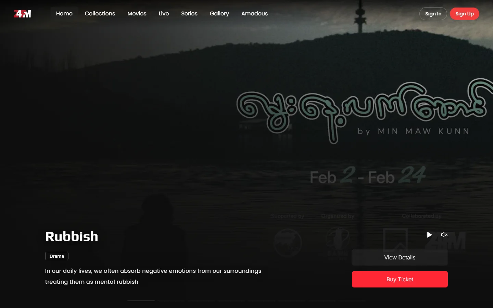

Frontend · Production
24FramesMozart
A video streaming platform for films and live events, in production. I was the main frontend engineer: I built the browse, playback and account screens against the team's REST APIs, and owned routing, state and responsive layout.
- React
- Next.js
- REST APIs